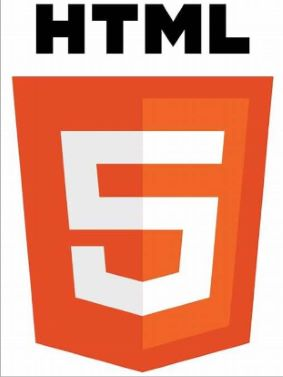
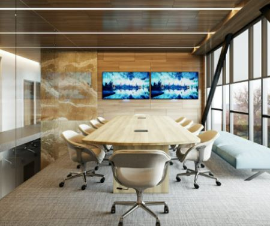

Arbeid På Skulen
Teknologi forståelse
Lær av bruk av prinsipper innen teknologi og deres anvendelse i hverdagen.

Konsept utvikling og programmering
Utvikling av nettsider ved hjelp av HTML for struktur og CSS for design og layout.
Yrkesfaglig fordypning
Praktisk erfaring: Utplassert ved Bergen Offentlige Bibliotek.
Produksjon og historiefortelling
Lær å skape bilder av høy kvalitet